library("RJDemetra")SA: Pre-Treatment
In this chapter
The following sections cover pre-treatment with Reg-ARIMA (or Tramo) algorithms. Tramo and the Reg-ARIMA part of X-13-ARIMA rely on very similar principles. Thus Tramo will only be mentioned to highlight differences with the Reg-ARIMA part of X-13-ARIMA.
Reg-ARIMA modelling part can be the first of a seasonal adjustment process or run on its own. Below we focus on performing Reg-ARIMA modelling as pre-treatment in a SA processing.
More in-depth methodological explanations of the algorithms can be found in this part of the documentation.
Pre-treatment principles
The goal of this step is to remove deterministic effects (calendar and outliers) in order to improve the decomposition.
\[ Y_t = \sum{\alpha}_i O_{it} + \sum\beta_j C_{jt} + \sum {\gamma}_i Reg_{it} + Y_{lin,t} \]
Reallocation of pre-treatment effects
The linearised series (\(Y_{lin,t}\)) is be decomposed into unobservable components in the decomposition phase
\[Y_{lin} =S_{lin} +T_{lin}+I_{lin}\]
Pre-treatment effects are then reallocated to build the final components
\[S=S_{lin}+cal+out_s+reg_s\]
\[T=T_{lin}+out_t+reg_{t}\]
\[I=I_{lin}+out_i+reg_{i}\]
Where
\(cal\) is the total calendar effect
\(out_j\) is the total effect of outliers on component \(j\)
\(reg_j\) is the total effect of user-defined regressors on component \(j\)
Setting Specifications
Default specifications are set for the whole SA procedure, pre-treatment and decomposition. They are slightly different for X-13-ARIMA and Tramo-Seats and can be modified with user-defined parameters.
Starting point for X-13-ARIMA
| Spec identifier | Log/level detection | Outliers detection | Calendar effects | ARIMA |
|---|---|---|---|---|
| RSA0 | NA | NA | NA | Airline(+mean) |
| RSA1 | automatic | AO/LS/TC | NA | Airline(+mean) |
| RSA2c | automatic | AO/LS/TC | 2 TD vars+Easter | Airline(+mean) |
| RSA3 | automatic | AO/LS/TC | NA | automatic |
| RSA4c | automatic | AO/LS/TC | 2 TD vars+Easter | automatic |
| RSA5 | automatic | AO/LS/TC | 7 TD vars+Easter | automatic |
| X-11 | NA | NA | NA | NA |
explanations:
NA: non applied, for example in RSA3 there is no calendar effect correction
automatic: test is performed
outliers detection: AO/LS/TC type of outliers automatically detected under a critical T-Stat value (default value=4)
calendar:
2 regressors: weekdays vs week-ends + LY
7 regressors: each week day vs Sundays + LY
always tested
easter tested (default length = 6 days in Tramo, 8 days in X-13-ARIMA)
Starting point for Tramo-Seats
| Spec identifier | Log/level detection | Outliers detection | Calendar effects | ARIMA |
|---|---|---|---|---|
| RSA0 | NA | NA | NA | Airline(+mean) |
| RSA1 | automatic | AO/LS/TC | NA | Airline(+mean) |
| RSA2 | automatic | AO/LS/TC | 2 TD vars+Easter | Airline(+mean) |
| RSA3 | automatic | AO/LS/TC | NA | automatic |
| RSA5 | automatic | AO/LS/TC | 6 TD vars+Easter | automatic |
| RSAfull | automatic | AO/LS/TC | automatic | automatic |
User-defined specifications
Principle oser setting parameters: can be done from one of the default specifications or any specification in a “Save as” mode very similar in GUI and R, as detailed below.
The user may add new seasonal adjustment specifications to the Workspace window. To do it, go to the Seasonal adjustment section, right click on the tramoseats or x13 item in the specifications node and select New from the local menu.
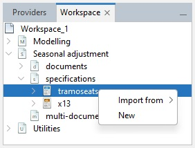
Next, double click on the newly created specification, change the settings accordingly and confirm with the OK button.
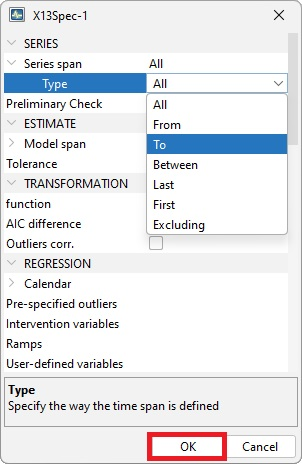
Spans
Estimation span
Specifies the span (data interval) of the time series to be used in the seasonal adjustment process. The user can restrict the span
Common settings
| Option | Description (expected format) | |
|---|---|---|
| All | default | |
| From | first observation included (yyyy-mm-dd) | |
| To | last observation included (yyyy-mm-dd) | |
| Between | interval [from ; to] included (yyyy-mm-dd to yyyy-mm-dd) | |
| First | number of obs from the beginning of the series included (dynamic) (integer) | |
| Last | number of obs from the end of the series (dynamic)(integer) | |
| Excluding | excluding N first obs and P last obs from the computation,dynamic) (integer) | |
| Preliminary check | check to exclude highly problematic series e.g. the series with a number of identical observations and/or missing values above pre-specified threshold values. (True/False) |
Setting series span in GUI
Use the specification window for a given series and expand the nodes.
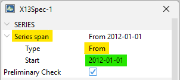
X-13 in version 2
# estimation interval: option with static dates
user_spec_1 <- x13_spec(
spec = c(
"RSA5c", "RSA0", "RSA1", "RSA2c",
"RSA3", "RSA4c", "X11"
),
preliminary.check = TRUE,
estimate.from = "2012-06-01",
estimate.to = "2019-12-01"
)
# estimation interval: option with dynamic numbers of observations
#
# spec can be applied on different series and therefore exclude different dates
user_spec_2 <- x13_spec(
spec = c("RSA5c", "RSA0", "RSA1", "RSA2c", "RSA3", "RSA4c", "X11"),
estimate.first = 12
)
# eestimation on the last 120 obs
user_spec_3 <- x13_spec(
spec = c("RSA5c", "RSA0", "RSA1", "RSA2c", "RSA3", "RSA4c", "X11"),
estimate.last = 120
)
# excluding first 24 and last 36 observations
user_spec_4 <- x13_spec(
spec = c("RSA5c", "RSA0", "RSA1", "RSA2c", "RSA3", "RSA4c", "X11"),
estimate.exclFirst = 24,
estimate.exclLast = 36
)
# Retrieve settingsFor comprehensive details about x13_spec() function see RJDemetra R help pages.
Tramo-Seats in version 2
# excluding first 24 and last 36 observations
user_spec_1 <- tramoseats_spec(
spec = c("RSAfull", "RSA0", "RSA1", "RSA2", "RSA3", "RSA4", "RSA5"),
estimate.exclFirst = 24,
estimate.exclLast = 36
)For comprehensive details about tramoseats_spec() function see RJDemetra R help pages.
Setting model span
The user can also specify the span (data interval) of the time series to be used for the estimation of the Reg-ARIMA model coefficients. It allows to impede a chosen part of the data from influencing the regression estimates. Setting works the same way as setting series (estimation) span described above.
Additional (vs series span setting) parameters are described below:
| Tolerance | Convergence tolerance for the non-linear estimation. The absolute changes in the log-likelihood are compared to Tolerance to check the convergence of the estimation iterations. The default setting is 0.0000001. |
| Tramo specific parameters | |
| Exact ML | When this option is marked, an exact maximum likelihood estimation is performed. Alternatively, the Unconditional Least Squares method is used. However, in the current version of JDemetra+ it is not recommended to change this parameter’s value |
| Unit Root Limit | Limit for the autoregressive roots. If the inverse of a real root of the autoregressive polynomial of the ARIMA model is higher than this limit, the root is set equal to 1. The default parameter value is 0.96. |
Setting model span in GUI:
Use the specification window
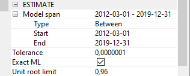
Tramo example in version 2
# excluding first 24 and last 36 observations
user_spec_1 <- tramoseats_spec(
spec = c("RSAfull", "RSA0", "RSA1", "RSA2", "RSA3", "RSA4", "RSA5"),
estimate.tol = 0.0000001,
estimate.eml = FALSE,
estimate.urfinal = 0.98
)Decomposition Scheme
Parameters
Transformation test: a test is performed to choose between an additive decomposition (no transformation) (link to reg A chap to detail this)
Settings
Function
transform {function=}
Transformation of data. 2 The user can choose between:
None – no transformation of the data;
Log – takes logs of the data;
Auto – the program tests for the log-level specification. This option is recommended for automatic modelling of many series.
The default setting is Auto.
Reg-ARIMA specific settings
AIC difference
transform {aicdiff=}
Defines the difference in AICC needed to accept no transformation over a log transformation when the automatic transformation
selection option is invoked. The option is disabled when Function is not set to Auto. The default AIC difference value is -2.
Adjust
transform {adjust=}
Options for proportional adjustment for the leap year effect. The option is available when Function is set to Log. Adjust can be set to:
LeapYear – performs a leap year adjustment of monthly or quarterly data;
LengthofPeriod – performs a length-of-month adjustment on monthly data or length-of-quarter adjustment on quarterly data;
None – does not include a correction for the length of the period.
The default setting is None
Tramo specific settings
Fct
Transformation; fct
Controls the bias in the log/level pre-test (the function is active when Function is set to Auto); Fct > 1 favours levels, Fct < 1 favors logs. The default setting is 0.95.
Set in GUI
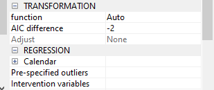
Set and in R
X-13
# excluding first 24 and last 36 observations
user_spec <- x13_spec(
spec = c("RSA5c", "RSA0", "RSA1", "RSA2c", "RSA3", "RSA4c", "X11"),
transform.function = "Log", # choose from: c(NA, "Auto", "None", "Log"),
transform.adjust = "LeapYear", # c(NA, "None", "LeapYear", "LengthOfPeriod"),
transform.aicdiff = -3
)
# Retrieve settings: to complete*Tramo-Seats settings
# transfo
user_spec_1 <- tramoseats_spec(
spec = c("RSAfull", "RSA0", "RSA1", "RSA2", "RSA3", "RSA4", "RSA5"),
transform.function = "Auto", # c(NA, "Auto", "None", "Log"),
transform.fct = 0.5
)
# Retrieve settings: to completeCalendar correction
Some calendar correction options included in the starting specifications for X-13-ARIMA or Tramo-Seats, they can be fine-tuned by modifying specifications. The following section lists all the available options, illustrates how to set them in GUI or R and shows have to retrieve used parameters, regressors as well as results.
JDemetra+ offers two default options for calendar correction working days regressors and trading days regressors, with Leap-year effect if needed. Those options don’t take into account national calendars (link) and their specific holidays. There are two ways to change this:
user-defined regressors (link)
customized calendars (link)
Overview: what you can do
Need 1: correct for working days, trading days (+ easter) not taking national calendars
Need 2: taking national calendar into account Solutions
- add a work of means of allocating regressors to the calendar component
Available Options
Trading Days
“Trading Days” has two meanings: general calendar correction process (here without easter effect) and one of the options of this correction (see below)
- "None": no correction for trading days and working days effects
- "Default": JDemetra + built regressors (xorking days or trading days)
- "Holidays": same as above but taking into accoutn a national calendar, available on ly in GUI, R interface requires direct use of pre-built regressors
- "UserDefined": user-defined trading days regressors (see below)
- (if NONE) indicating the day of the month when inventories and other stock are reported (to denote the last day of the month, set the variable to 31). Leap Year effect
Autoadjust
If enabled, the program corrects automatically for the leap year effect.. When is the option available Modifications of this variable are taken into account only when transform.function is set to “Auto”.
Leapyear
to specify whether or not to include the leap-year effect in the model: - “LeapYear”: leap year effect; - “LengthOfPeriod”: length of period, - “None” = no effect included.
The leap-year effect can be pre-specified in the model only if the input series hasn’t been pre-adjusted (transform.adjust set to “None”) and if the automatic correction for the leap-year effect isn’t selected (tradingdays.autoadjust set to FALSE).
Test
Test: defines the pre-tests for the significance of the trading day regression variables based on the AICC statistics: “Add” = the trading day variables are not included in the initial regression model but can be added to the Reg-ARIMA model after the test; “Remove” = the trading day variables belong to the initial regression model but can be removed from the Reg-ARIMA model after the test; “None” = the trading day variables are not pre-tested and are included in the model.
Easter
Easter.enabled a logical. If TRUE, the program considers the Easter effect in the model.
easter.Julian a logical. If TRUE, the program uses the Julian Easter (expressed in Gregorian calendar).
easter.duration a numeric indicating the duration of the Easter effect (length in days, between 1 and 20).
easter.test defines the pre-tests for the significance of the Easter effect based on the t-statistic (the Easter effect is considered as significant if the t-statistic is greater than 1.96): “Add” = the Easter effect variable is not included in the initial regression model but can be added to the Reg-ARIMA model after the test; “Remove” = the Easter effect variable belongs to the initial regression model but can be removed from the Reg-ARIMA model after the test; “None” = the Easter effect variable is not pre-tested and is included in the model.
A user-defined regressor can also be used, see chapter on calendar correction
(to be added: additional options in Tramo)
Setting Calendar correction in GUI
Using default options (without national calendars)
In GUI Use the specification window
Calendar effects
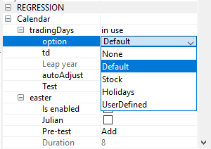
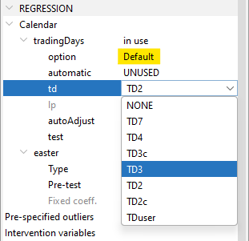
Holidays option
using a customized calendar just show how to fetch it building process in calendar chapter
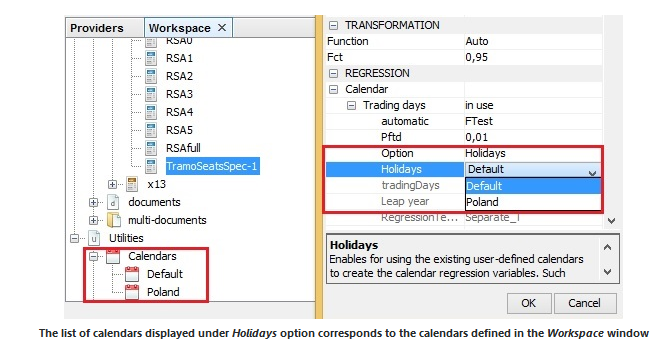
Missing: stock td option, length-of-period
User-defined regressors: adding see below
Link to Import data Once data imported: here explain how to link variables
Easter
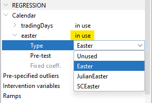
Setting Calendar correction in R
In version 2
# Parameter choice NA=...
tradingdays.option <- c(NA_character_, "TradingDays", "WorkingDays", "UserDefined", "None")
tradingdays.autoadjust <- NA
tradingdays.leapyear <- c(NA_character_, "LeapYear", "LengthOfPeriod", "None")
tradingdays.stocktd <- NA_integer_
tradingdays.test <- c(NA_character_, "Remove", "Add", "None")
easter.enabled <- NA
easter.julian <- NA
easter.duration <- NA_integer_
easter.test <- c(NA_character_, "Add", "Remove", "None")
# exampleIn version 3 (Under construction)
User defined regressors
If User Defined options is used for trading days, regressors have to be provided by the user.
Building Regressors The underlying methodology and implementation in JDemetra+ to build these regression variables are provided here
Adding Regressors in GUI
Step 1: import data set containing the regressors, general procedure explained here
Step 2: Link the regressors to the workspace, procedure detailed here
Step 3: Modify specifications Modifications are done the same way in a global specification (whole SAP) or series by series.
- select trading days User-defined option and select variables
In the specification window, click right from “userVariables” on “Unused” to open the variable selection window
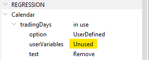
Move right the chosen regressors
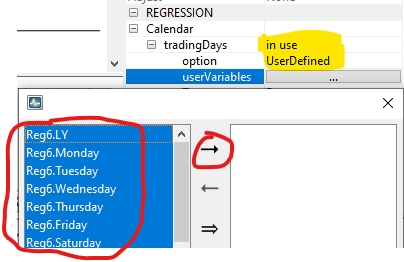
- set TEST option (expl)
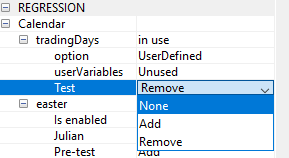
Adding Regressors in R
“UserDefined” = user-defined trading days regressors (regressors must be defined by the usrdef.var argument with usrdef.varType set to “Calendar” and usrdef.varEnabled = TRUE).
# example
spec_4 <- x13_spec(
spec = spec_1,
tradingdays.option = "UserDefined",
tradingdays.test = "None",
usrdef.varEnabled = TRUE,
usrdef.varType = "Calendar",
usrdef.var = reg3
) # set of regressors in TS formatRetrieving Results
The following section details how to retrieve results (parameters, regressors, regression coefficients and tests) when using GUI or R interface.
Parameters
Parameters are regressors used in fine. If non test options, parameters are known If test options are selected by the algorithm.
In GUI
Automatically chosen or user-defined calendar options (as well as other pre-adjustment options) are displayed at the top of the MAIN Results NODE displayed by clicking on a given series name in the SAProcessing panel.
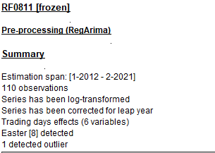
In R
(to be added)
version 2: RJDemetra
version 3: rjd3x13 or rjd3tramoseats
Regressors
In GUI All regressors in the pre-adjustment phase (calendar, outliers, external) are displayed in the pre-processing-regressors node.
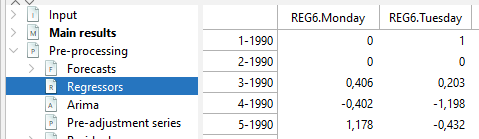
In R
(to be added)
Version 2
version 3
Regression results
Regressions results
In GUI
The results of the whole Reg-ARIMA regression (link to last section) including calendar effects (below) are displayed in the pre-processing panel.
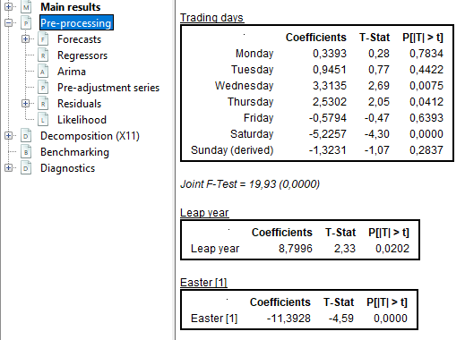
In R
Test for residual trading-days effects
Residual calendar effects are tested with A F-Test 7 regressors and no national calendar, on sa final series and on irregular component (link to calendar chapter for test details)
In GUI
F-Test results are displayed at the bottom of Main Results NODE in the SAProcessing panel
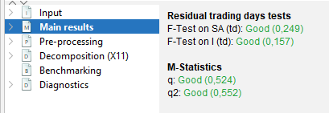
In R
Customizing Calendars
The following describes how to take a national calendar into account.
Solution 1: if working with GUI build a new calendar in GUI (here
(to be added: GUI: how to use it or customize HTML file structure explanation)
set this option in GUI
(to be added: image: spec window calendar / holidays / choice of calendars)
set this option in R (to be added) version 2:
version 3:
solution 2: import external regressors, which can be built with rjd3toolkit (link) which can then be used in via are or imported via GUI
set this option in GUI how to import variables into JD+ / set utility (in interface chapter) classical user defined
set this option in R version 2:
version 3
Once the calendar regressors are set, the Reg-ARIMA (Tramo) model will be estimated globally with all the other regression variables and taking into account ARIMA model specificities as well. That is why diagnostics are all jointly displayed at the end of the process. (link)
(to be added: worked example: french calendar in R)
Outliers
The sections below focus on
outlier detection parameters (type and critical value)
pre-specifying outliers in a seasonal adjustement (Reg-ARIMA modelling) process
Additional information can be found in this chapter.
Options for automatic detection
Is enabled
outliers; iatipEnables/disables the automatic detection of outliers in the span determined by the Detection span option. By default, the checkbox is marked, which implies that the automatic identification of outliers is enabled.
Use default critical value
outliers; vaThe critical value is automatically determined by the number of observations in the interval specified by the Detection span option. When Use default critical value is disabled, the procedure uses the critical value inputted in the Critical value item (see below). Otherwise, the default value is used (the first case corresponds to “critical = xxx”; the second corresponds to a specification without the critical argument). It should be noted that it is not possible to define a separate critical value for each outlier type. By default, the checkbox is marked, which implies that the automatic determination of the critical value is enabled.
Critical value
outliers; vaThe critical value used in the outlier detection procedure. The option is active once Use default critical value is disabled. By default, it is set to 3.5.
Detection span $$ type
outliers; int1, int2*A span of the time series to be searched for outliers. The possible values of the parameter are:
- All – full time series span is considered in the modelling;
- From – date of the first time series observation included in the pre-processing model;
- To – date of the last time series observation included in the pre-processing model;
- Between – date of the first and the last time series observations included in the pre-processing model;
- Last – number of observations from the end of the time series included in the pre-processing model;
- First – number of observations from the beginning of the time series included in the pre-processing model;
- Excluding – number of observations excluded from the beginning (specified in the first field) and/or end of the time series (specified in the last field) of the pre-processing model.
With the options Last, First, Excluding the span can be computed dynamically on the series. The default setting is All.
Additive
outliers; aio*Automatic identification of additive outliers. By default, this option is enabled.
Level shift
outliers; aio*Automatic identification of level shifts. By default, this option is enabled.
Transitory change
outliers; aio*Automatic identification of transitory changes. By default, this option is enabled.
Seasonal outlier
outliers; aio*Automatic identification of seasonal outliers. By default, this option is disabled. Tramo specific
EML estimation
outliers; imvxThe estimation method used in the automatic model identification procedure. By default, the fast method of Hannan-Rissanen is used for parameter estimation in the intermediate steps of the automatic detection and correction of outliers. When the checkbox is marked the exact maximum likelihood estimation method is used.
TC rate
outliers; deltatcThe rate of decay for the transitory change outlier. It takes values between 0 and 1. The default value is 0.7.
Options for pre-specified outliers
User-defined outliers are used when prior knowledge suggests that certain effects exist at known time points[^14]. Four pre-defined outlier types, which are simple forms of intervention variables, are implemented: * Additive Outlier (AO); * Level shift (LS); * Temporary change[^15] (TC); * Seasonal outliers (SO).
Setting in GUI
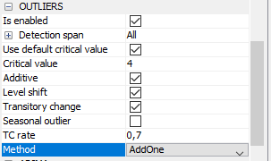
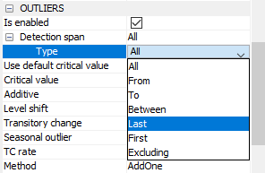
Pre-specified :
- Click on …
- Click on +
- Fill the outlier’s information
- Click on Ok
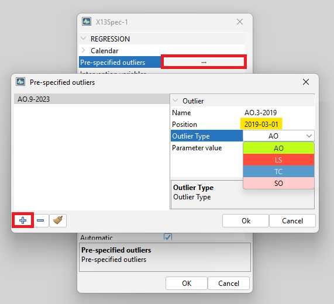
To change the view to set the outliers, got to Tools –> Options

Then to Demetra –> Pre-specified Outliers –> Calendar-like Grid –> Ok
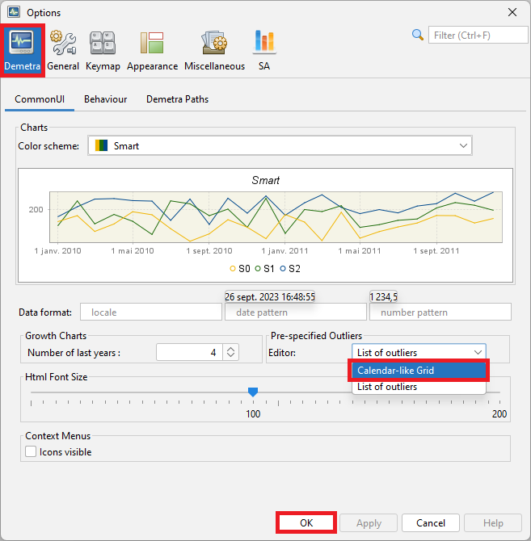
Then you have the calendar view (when selecting the pre-specified outliers) :

Setting in R
(to be added)
Retrieving results
Parameters
In GUI
In main results NODE (same info at top of pre-processing NODE)
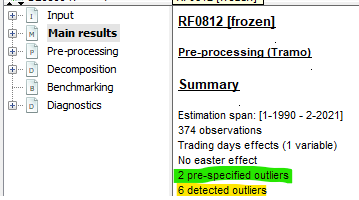
Regressors
In GUI
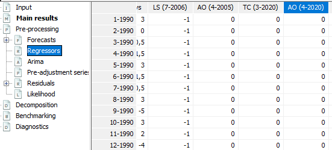
In R
(to be added)
Regression details
In GUI
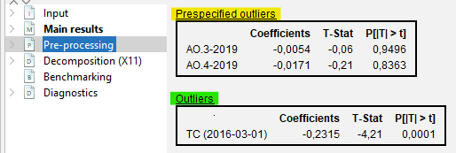
In R
(to be added)
User-defined regressors
(to be added)
rationale
parameters: assign to a component
Pre-treatment regression with additional outliers
\[ Y_t = \sum \hat{\alpha}_i O_{it} + \sum\hat\beta_j C_{jt} + \sum\hat\gamma_k Reg_{kt} + y_{lin_t} \]
Allocation to components
\(reg= reg_{i}+reg_{t}+reg_{s}+...\) The user-defined regression variable associated to a specific component should not contain effects that have to be associated with another component. Therefore, the following rules should be observed: * The variable assigned to the trend or to the seasonally adjusted series should not contain a seasonal pattern; * The variable assigned to the seasonal should not contain a trend (or level); * The variable assigned to the irregular should contain neither a seasonal pattern nor a trend (or level). - no external regressors can be assigned to calendar component. It has to be be done via user defined calendar regressors specific part (link)
Ramps and intervention variables are Specific cases of external regressors
Setting in GUI
User-defined variables
Step 1: import data set containing the regressors, general procedure explained here
Step 2: Link the regressors to the workspace, procedure detailed here
Step 3: Modify specifications via window
Modifications are done the same way in a global specification (whole SAP) or series by series.
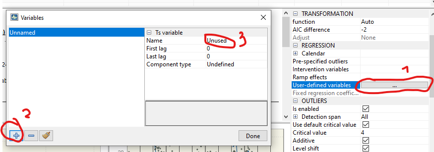
Setting in R
(to be added)
Special case 1: Ramp effects
A ramp effect means a linear increase or decrease in the level of the series over a specified time interval \(t_{0}\) to \(\ t_{1}\). All dates of the ramps must occur within the time series span. (tested: not true). Ramps can overlap other ramps, additive outliers and level shifts.
Creation in GUI

Allocation to components
allocation when intervention or ramps ? in test allocated to trend ? (reg)
impossible (?) to create several intervention variables
Special case 2: Intervention variables
Intervention variables are modeled as any possible sequence of ones and zeros, on which some operators may be applied. They are built as combinations of the following basic structures:
- Dummy variables [^17];
- Any possible sequence of ones and zeros;
- \(\frac{1}{(1 - \delta B)}\),
- \((0 < \delta \leq 1)\)
- \(\frac{1}{(1 - \delta_{s}B^{s })}\),
- \((0 < \delta_{s} \leq 1)\);
- \(\frac{1}{(1 - B)(1 - B^{s})}\);
where \(B\) is backshift operator (i.e. \(B^{k}X_{t} = X_{t - k}\)) and \(s\) is frequency of the time series (\(s = 12\) for a monthly time series, \(s = 4\) for a quarterly time series).
These basic structures enable the generation of not only AO, LS, TC, SO and RP outliers but also sophisticated intervention variables that are well-adjusted to the particular case.
Creation in GUI
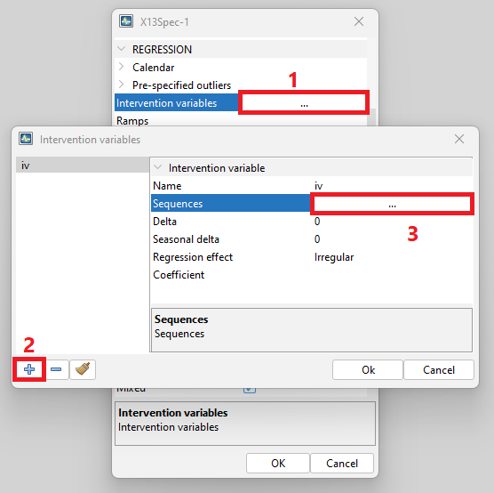

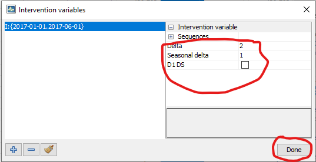
Creation in R
(to be added)
Allocation to components
allocation (to be added)
fixed coefficient options
Fixed regression coefficients
regression variables; –For the pre-specified regression variables this option specifies the parameter estimates that will be held fixed at the values provided by the user. To fix a coefficient the user should undertake the following actions:
- Choose the transformation (log or none).
- Define some regression variables in the Regressors specification.
- Push on the fixed regression coefficients editor button in the User-defined variables row.
- Select the regression variable from the list for which the coefficient will be fixed.
- Save the new setting with the Done button.
Retrieving Results
For all types of external regressors: user-defined, ramps or intervention variables.
Regressors
In GUI
To retrieve regressors that were actually used, expand pre-processing NODE and click on Regressors pane.
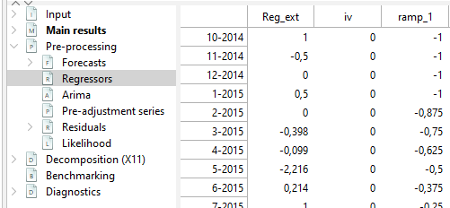
In R
(to be added )
Regression details
In GUI
Regression details are in the pre-processing pane.
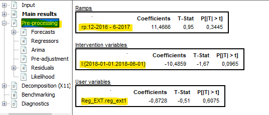
IN R
ARIMA Model
Key specifications on ARIMA modelling are embedded in default specifications: airline (default model) or full automatic research.(links)
Two kinds of interventions are available to the user
modify automatic detection parameters
set a user defined ARIMA model
In both cases forecast horizon can also be set (link)
Options for modifying automatic detection
automdl.enabled If TRUE, the automatic modelling of the ARIMA model is enabled. (If FALSE, the parameters of the ARIMA model can be specified, see below)
Control variables for the automatic modelling of the ARIMA model (when automdl.enabled is set to TRUE):
automdl.acceptdefault a logical. If TRUE, the default model (ARIMA(0,1,1)(0,1,1)) may be chosen in the first step of the automatic model identification. If the Ljung-Box Q statistics for the residuals is acceptable, the default model is accepted and no further attempt will be made to identify another model.
automdl.cancel the cancellation limit (numeric). If the difference in moduli of an AR and an MA roots (when estimating ARIMA(1,0,1)(1,0,1) models in the second step of the automatic identification of the differencing orders) is smaller than the cancellation limit, the two roots are assumed equal and cancel out.
automdl.ub1 the first unit root limit (numeric). It is the threshold value for the initial unit root test in the automatic differencing procedure. When one of the roots in the estimation of the ARIMA(2,0,0)(1,0,0) plus mean model, performed in the first step of the automatic model identification procedure, is larger than the first unit root limit in modulus, it is set equal to unity.
automdl.ub2 the second unit root limit (numeric). When one of the roots in the estimation of the ARIMA(1,0,1)(1,0,1) plus mean model, which is performed in the second step of the automatic model identification procedure, is larger than second unit root limit in modulus, it is checked if there is a common factor in the corresponding AR and MA polynomials of the ARMA model that can be cancelled (see automdl.cancel). If there is no cancellation, the AR root is set equal to unity (i.e. the differencing order changes).
automdl.mixed a logical. This variable controls whether ARIMA models with non-seasonal AR and MA terms or seasonal AR and MA terms will be considered in the automatic model identification procedure. If FALSE, a model with AR and MA terms in both the seasonal and non-seasonal parts of the model can be acceptable, provided there are no AR or MA terms in either the seasonal or non-seasonal terms.
automdl.balanced a logical. If TRUE, the automatic model identification procedure will have a preference for balanced models (i.e. models for which the order of the combined AR and differencing operator is equal to the order of the combined MA operator).
automdl.armalimit the ARMA limit (numeric). It is the threshold value for t-statistics of ARMA coefficients and constant term used for the final test of model parsimony. If the highest order ARMA coefficient has a t-value smaller than this value in magnitude, the order of the model is reduced. If the constant term t-value is smaller than the ARMA limit in magnitude, it is removed from the set of regressors.
automdl.reducecv numeric, ReduceCV. The percentage by which the outlier’s critical value will be reduced when an identified model is found to have a Ljung-Box statistic with an unacceptable confidence coefficient. The parameter should be between 0 and 1, and will only be active when automatic outlier identification is enabled. The reduced critical value will be set to (1-ReduceCV)*CV, where CV is the original critical value.
automdl.ljungboxlimit the Ljung Box limit (numeric). Acceptance criterion for the confidence intervals of the Ljung-Box Q statistic. If the LjungBox Q statistics for the residuals of a final model is greater than the Ljung Box limit, then the model is rejected, the outlier critical value is reduced and model and outlier identification (if specified) is redone with a reduced value.
automdl.ubfinal numeric, final unit root limit. The threshold value for the final unit root test. If the magnitude of an AR root for the final model is smaller than the final unit root limit, then a unit root is assumed, the order of the AR polynomial is reduced by one and the appropriate order of the differencing (non-seasonal, seasonal) is increased. The parameter value should be greater than one.
(for both options) fcst.horizon the forecasting horizon (numeric). The forecast length generated by the Reg-ARIMA model in periods (positive values) or years (negative values). By default, the program generates a two-year forecast (fcst.horizon set to -2). Defaults different in GUI and R.


Forecast horizon when using Tramo-Seats Is set in the decomposition part of the specification in GUI.
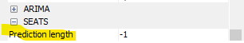
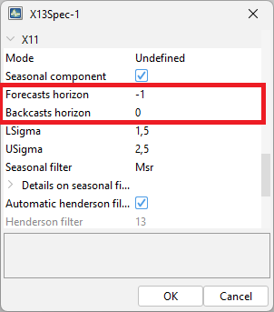
Setting in R (first template, then worked example) X-13-ARIMA template in version 2
spec_2 <- x13_spec(
spec = spec_1,
automdl.enabled = NA,
automdl.acceptdefault = NA,
automdl.cancel = NA_integer_,
automdl.ub1 = NA_integer_,
automdl.ub2 = NA_integer_,
automdl.mixed = NA,
automdl.balanced = NA,
automdl.armalimit = NA_integer_,
automdl.reducecv = NA_integer_,
automdl.ljungboxlimit = NA_integer_,
automdl.ubfinal = NA_integer_
)add worked example in version 2
in version 3
add worked example in version 3
Options for setting a user-defined ARIMA model
Control variables for the non-automatic modelling of the ARIMA model (when automdl.enabled is set to FALSE):
arima.mu logical. If TRUE, the mean is considered as part of the ARIMA model.
arima.p numeric. The order of the non-seasonal autoregressive (AR) polynomial.
arima.d numeric. The regular differencing order.
arima.q numeric. The order of the non-seasonal moving average (MA) polynomial.
arima.bp numeric. The order of the seasonal autoregressive (AR) polynomial.
arima.bd numeric. The seasonal differencing order.
arima.bq numeric. The order of the seasonal moving average (MA) polynomial.
Control variables for the user-defined ARMA coefficients. Coefficients can be defined for the regular and seasonal autoregressive (AR) polynomials and moving average (MA) polynomials. The model considers the coefficients only if the procedure for their estimation (arima.coefType) is provided, and the number of provided coefficients matches the sum of (regular and seasonal) AR and MA orders (p,q,bp,bq).
arima.coefEnabled logical. If TRUE, the program uses the user-defined ARMA coefficients.
arima.coef a vector providing the coefficients for the regular and seasonal AR and MA polynomials. The vector length must be equal to the sum of the regular and seasonal AR and MA orders. The coefficients shall be provided in the following order: regular AR (Phi; p elements), regular MA (Theta; q elements), seasonal AR (BPhi; bp elements) and seasonal MA (BTheta; bq elements). E.g.: arima.coef=c(0.6,0.7) with arima.p=1, arima.q=0,arima.bp=1 and arima.bq=0.
arima.coefType a vector defining the ARMA coefficients estimation procedure. Possible procedures are: “Undefined” = no use of any user-defined input (i.e. coefficients are estimated), “Fixed” = the coefficients are fixed at the value provided by the user, “Initial” = the value defined by the user is used as the initial condition. For orders for which the coefficients shall not be defined, the arima.coef can be set to NA or 0, or the arima.coefType can be set to “Undefined”. E.g.: arima.coef = c(-0.8,-0.6,NA), arima.coefType = c(“Fixed”,“Fixed”,“Undefined”).
Setting in GUI
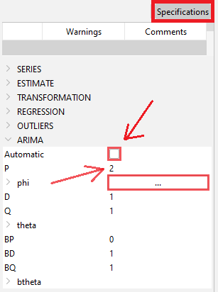
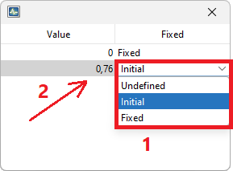
Setting in R
X-13-ARIMA template in version 2
spec_2 <- x13_spec(
spec = spec_1,
automdl.enabled = FALSE,
arima.mu = NA,
arima.p = NA_integer_,
arima.d = NA_integer_,
arima.q = NA_integer_,
arima.bp = NA_integer_,
arima.bd = NA_integer_,
arima.bq = NA_integer_,
arima.coefEnabled = NA,
arima.coef = NA,
arima.coefType = NA,
fcst.horizon = NA_integer_
)in version 3
Reg-ARIMA model Results and Diagnostics
Type of results (including Tramo addenda)
all regressors used (shown above)
regression details: explanatory variables (above)
ARIMA model specific results
additional diagnostics on residuals
likelihood
seasonality tests on residuals
Display in GUI
Reg-ARIMA model detail with other regression results in pre-processing pane. with number of observations.. parameters
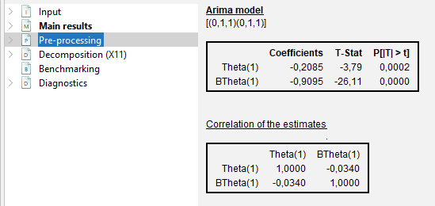
More details in Pre-processing/ARIMA Node

In residual Node


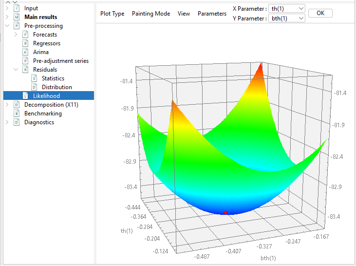
Seasonality tests on residuals in the Diagnostics NODE
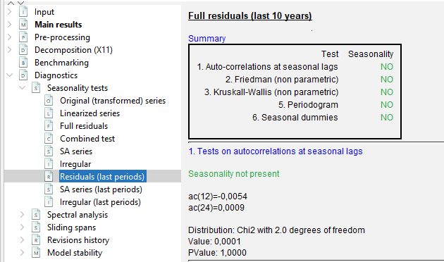